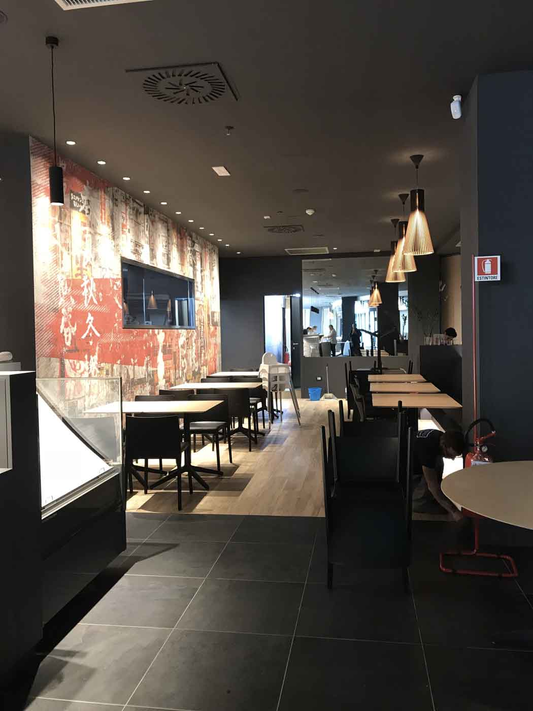
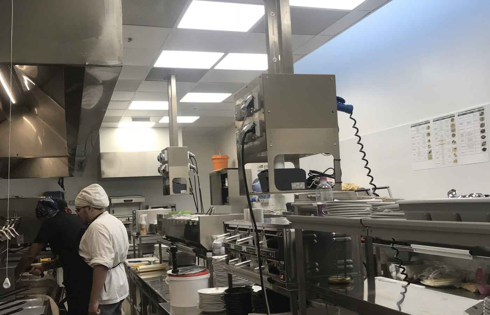

Realizzazione impianto elettrico, rete dati, videosorveglianza e impianto allarme.
Shi's Roma
Valle Aurelia, Roma, Lazio
Realizzazione impianti elettrici, dati e diffusione sonora.

Shi's c.c. Le Vele Millenium
Quartucciu, Cagliari, Sardegna
Realizzazione impianti elettrici.
Old Wild West
Montesilvano, Pescara, Abruzzo
Realizzazione impianti elettrici, dati e diffusione sonora.

Antuofermo Sportswear
Sestu, Cagliari, Sardegna
Realizzazione impianti di illuminazione, forza motrice, telesorveglianza, antintrusione, rilevazione fumi, cabine di trasformazione. Prodotti utilizzati: illuminazione (Zumtobel - Quattrobi); quadri (Schneider - Bticino).
Policlinico Universitario di Cagliari, Blocco Q
Monserrato, Cagliari, Sardegna
Realizzazione impianti elettrici, impianti rivelazione fumi, impianti dati, impianti telefonici, impianti diffuione sonora. Interventi effettuati per sei sale parto-travaglio, sala operatoria, terapia intensiva, subintensiva neonatale e neuropsichiatria infantile.
Stadio Is Arenas
Quartu Sant'Elena, Cagliari, Sardegna
Realizzazione impianto di illuminazione su torri faro e allestimento nuovi impianti elettrici.
Discoteca Tsunami
Santa Margherita di Pula, Cagliari, Sardegna
Realizzazione impianto luci, audio videosorveglianza, allarme e console djay presso il locale composto da n. 1 pista invernale, n. 2 estive ed una sala convegni. Capacità 4500 posti. Prodotti utilizzati: illuminazione (Zumtobel – Bega – Norlight – Viabizzuno); quadri (Bticino); componentistica sala (Martin).
Niu Asset Manager
Maracalagonis, Cagliari, Sardegna
Realizzazione impianti elettrici.
Impianto sportivo comunale
Villa San Pietro, Cagliari, Sardegna
Ristrutturazione e adeguamento.
Casa della Salute
Villacidro, Sud Sardegna, Sardegna
Realizzazione nuovi impianti elettrici in archivi e locali polifunzionali al piano seminterrato e messa in sicurezza.
Centro Alcologico ASL
Samassi, Cagliari, Sardegna
Realizzazione nuovi impianti elettrici.
Scuola Media di Serrenti
Via Gramsci, 2 - Serrenti, Cagliari, Sardegna
Lavori di manutenzione straordinaria di adeguamento alle norme di efficientamento energetico della Scuola media - Scuole sicure
C.U.S. Cagliari
Via Is Mirrionis - Cagliari, Cagliari, Sardegna
Impianti elettrici e dati.
Eurocasse
Santa Gilla, Cagliari, Sardegna
Impianti elettrici e dati.
Cantiere Navale di Battellieri
Via Roma - Cagliari, Cagliari, Sardegna
Impianti elettrici e videosorveglianza.
Cagliari Point
Largo Felice - Cagliari, Cagliari, Sardegna
Impianti elettrici, audio-video e rilevazione fumi.
Uffici Cagliari Calcio
Via Mameli - Cagliari, Cagliari, Sardegna
Impianti elettrici, condizionamento e dati.
Ospedale Sirai
Carbonia, Sud Sardegna, Sardegna
Risonanza magnetica, impianti elettrici, rilevazione fumi e dati.
Centro polifunzionale Loreal.
Impianti elettrici, audio, video e dati.
Nuova sede industriale TNT Traco.
Impianti elettrici, rilevazione fumi e dati.
Nuovo punto vendita Commerciale Orrù.
Impianti elettrici, dati, audio e allarme.
Struttura alberghiera Sa Morada.
Impianti elettrici, dati, audio e allarme.
Struttura commerciale Edilor.
Impianti elettrici, dati, audio e allarme.
Struttura commerciale Commerciale 554.
Impianti elettrici, dati, audio e allarme.
Opere di urbanizzazione lottizzazione Baracca Manna.
Illuminazione pubblica.
Nuovo impianto illuminazione pubblica Monastir.
Centro Commerciale Motivi di Quartucciu.
Impianti elettrici, audio e dati.
Centro commerciale Oltre di Quartucciu.
Impianti elettrici, audio e dati.
Centro commerciale Motivi Via Manno in Cagliari.
Impianti elettrici, audio e dati.
Nuovo centro Robe di Kappa Piazza Repubblica di Cagliari.
Realizzazione impianti elettrici, audio e dati.
Nuovo Cagliari Point Cagliari Calcio di Viale La Playa.
Realizzazione impianti elettrici, audio, video e dati.
Nuovo Cagliari Point Cagliari Calcio Via Santa Gilla.
Realizzazione impianti elettrici, audio, video e dati.
Nuovi spogliatoi prima e seconda squadra Centro Sportivo Ercole Cellino di Assemini.
Realizzazione impianti elettrici.
Nuova struttura industriale Flessografica di Elmas.
Realizzazione impianti elettrici e allarme.
Nuovi capannoni industriali Volvo zona industriale Assemini.
Realizzazione impianti elettrici e dati.
Nuova struttura industriale Karpotek di Elmas.
Realizzazione impianti elettrici e dati.
Nuova struttura industriale Procamion ex depositi Enel Santa Gilla.
Realizzazione impianti elettrici e dati.
Nuovo Centro Polisportivo di Sinnai.
Realizzazione impianti elettrici e dati.
Nuovo Centro Polisportivo di Mandas.
Realizzazione impianti elettrici.
Ristrutturazione impianti elettrici Universita' di Cagliari Campi Sa Duchessa.
Nuovo Parcheggio Multipiano in Palau.
Realizzazione impianti elettrici, dati, rilevazione fumi e videosorveglianza.
Aereoporto di Olbia
Olbia Sassari, Sardegnas
Realizzazione impianti di illuminazione (Philips, Disano, Castaldi), quadri (Bticino), elettrici e dati.
Parco della Certosa (proprietà Berlusconi)
Porto Cervo, Sassari, Sardegna
Realizzazione impianto illuminazione e illuminazione parco (Martin) e automazioni (Creston).
Hotel Esit
Alghero, Sassari, Sardegna
Realizzazione impianti elettrici, dati e rilevazione fumi con materiali forniti dal committente.
Hotel Orlando
Villanova Stresaili, Nuoro, Sardegna
Realizzazione illuminazione a led (Disano), quadri e componentistica(Bticino, Hagher Lume), impianti elettrici, dati e rilevazione fumi.